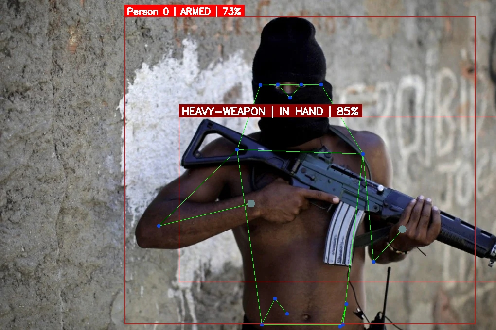
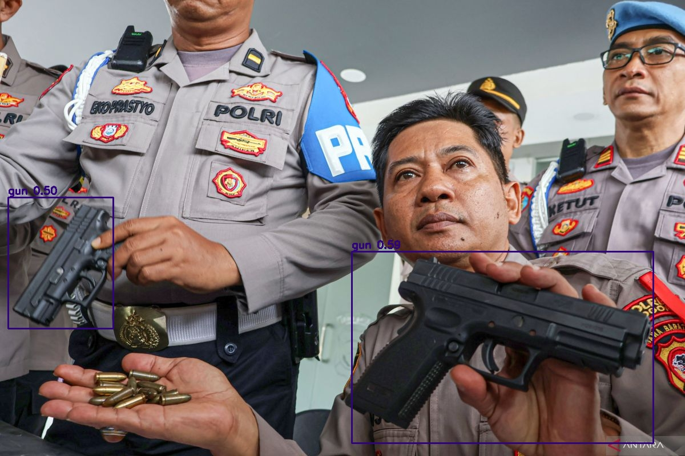
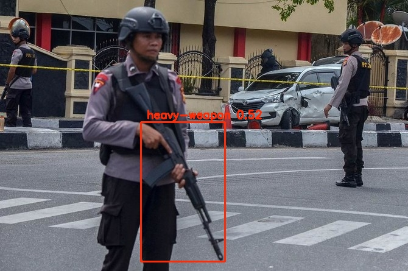

Project Overview
Automated Threat Detection
Public safety applications and surveillance systems require immediate identification of threats. This project deploys a fine-tuned YOLOv8 model capable of detecting weapons (like handguns and knives) in real-time video streams, operating successfully under diverse conditions including low-light, occlusion, and fast motion.
Impact: Integrating AI directly into CCTV feeds reduces human monitoring fatigue and provides instantaneous alerts, significantly lowering response times during critical incidents.
Detection Gallery
Model Output Samples
Annotated frames demonstrating accurate bounding boxes and confidence scores across varied environmental settings.

Detection Sample 1

Detection Sample 2

Multi-object Frame

Low-light Detection Sample
Live Demonstration
Video Inference Runs
Primary inference run with bounding box overlay
Extended scenario testing model robustness